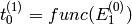
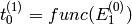

ModeratorTzero dialog.
Table of Contents
Corrects the time of flight of an indirect geometry instrument by a time offset that is dependent on the energy of the neutron after passing through the moderator.
| Name | Direction | Type | Default | Description |
|---|---|---|---|---|
| InputWorkspace | Input | MatrixWorkspace | Mandatory | The name of the input workspace, containing events and/or histogram data, in units of time-of-flight |
| OutputWorkspace | Output | MatrixWorkspace | Mandatory | The name of the output workspace |
| tolTOF | Input | number | 0.1 | Tolerance in the calculation of the emission time, in microseconds (default:1) |
| Niter | Input | m | 1 | Number of iterations (default:1) |
Corrects the time of flight (TOF) by a time offset that is dependent on the energy of the neutron after passing through the moderator. A heuristic formula for the correction is stored in the instrument definition file. Below is shown the entry in the instrument file for the VISION beamline:
<!-- formula for t0 calculation. See http://muparser.sourceforge.net/mup_features.html#idDef2 for available operators-->
<parameter name="t0_formula" type="string">
<value val="(incidentEnergy < 34.7332) ? 37.011296*incidentEnergy^(-0.052874) : (incidentEnergy < 88.7556) ? 124.267307*incidentEnergy^(-0.394282) : (incidentEnergy < 252.471) ? 963.775145*incidentEnergy^(-0.850919) : (incidentEnergy < 420.145) ? 33.225834*incidentEnergy^(-0.242105) : (incidentEnergy < 100000.0) ? 120.569231*incidentEnergy^(-0.455477) : 0.0" />
</parameter>
The recorded  with
with
 : emission time from the moderator
: emission time from the moderator : time from moderator to sample or monitor
: time from moderator to sample or monitorThis algorithm will replace  with
with 
For a direct geometry instrument, the incident energy  is
the same for all neutrons. Hence, the moderator emission time is the
same for all neutrons. For an indirect geometry instrument,
is different for each neutron and is not known. However, the final
energy
is
the same for all neutrons. Hence, the moderator emission time is the
same for all neutrons. For an indirect geometry instrument,
is different for each neutron and is not known. However, the final
energy  selected by the analyzers is known.
selected by the analyzers is known.
 , a function of the incident energy
, a function of the incident energy with
with  the distance from moderator to
sample, and
the distance from moderator to
sample, and  the initial unknown velocity (
the initial unknown velocity ( )
) with
with  the distance from sample to
detector, and
the distance from sample to
detector, and  is the final fixed velocity (
is the final fixed velocity ( )
)Note
We obtain  as an iterative process,
taking into account the fact that the correction is much
smaller than
as an iterative process,
taking into account the fact that the correction is much
smaller than  . Thus
. Thus
 ,
,  Set
Set  and obtain
and obtain  from the previous
formula. From we obtain
from the previous
formula. From we obtain  Set  and repeat the steps until
Set  and repeat the steps until
 . With
. With
 , only one iteration is needed for convergence.
, only one iteration is needed for convergence.
Here’s the result of applying ModeratorTzero to both the event list and the histogrammed data of a run in the VISION beamline. The transformation of either events or histograms shifts the curve to smaller TOF’s. The transformed curves are not supposed to be identical, but similar and differenciated from the original curve.


For indirect instruments featuring an incoming neutron flux having a
sufficiently narrow distribution of energies, a linear relationship
between and the wavelength of the incoming neutron can be
established. This relation allows for coding of an algorithm with faster
execution times. For indirect instruments that comply with these
conditions, use of ModeratorTzeroLinear v1 is
preferred.
Categories: Algorithms | CorrectionFunctions | InstrumentCorrections
{kind=link}